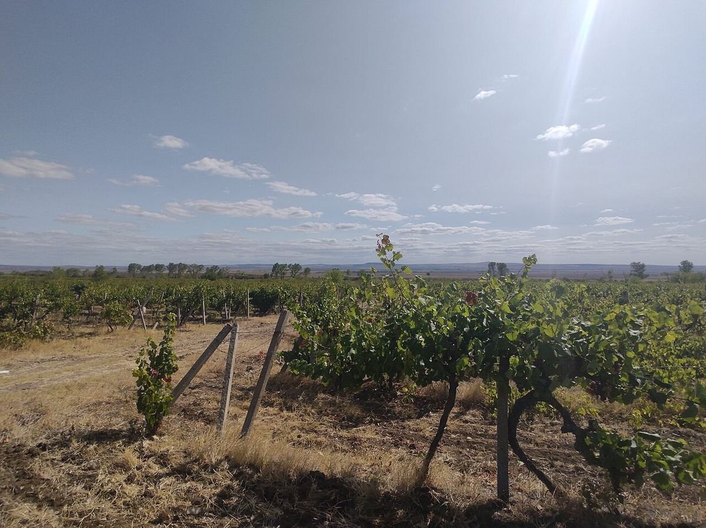

Bulgarie
La Bulgarie, héritière de l’ancienne tradition viticole thrace, fut dans la seconde moitié du XXe siècle l’un des grands exportateurs de vin d’Europe de l’Est. Elle associe aujourd’hui des cépages internationaux à des cépages autochtones comme le mavrud, le melnik ou le rubin.

Histoire
Le territoire de l’actuelle Bulgarie faisait partie de l’antique Thrace, dont les peuples avaient une tradition viticole profondément enracinée et liée au culte de Dionysos ; on a retrouvé dans la région de nombreux objets rituels liés au vin, comme des vases et des rhytons d’or et d’argent. La viticulture se poursuivit sous les Grecs, les Romains et les Byzantins, ainsi que dans le premier État bulgare. Pendant près de cinq siècles de domination ottomane, la production se maintint surtout dans les communautés chrétiennes et les monastères.
Après l’indépendance, à la fin du XIXe siècle, le vignoble subit les ravages du phylloxéra et fut replanté sur porte-greffes américains. Après la Seconde Guerre mondiale, le régime communiste collectivisa les terres et concentra la production dans de grandes entreprises d’État soumises à un monopole de commercialisation. Dans les années 1970 et 1980, la Bulgarie devint l’un des plus grands exportateurs de vin du bloc de l’Est, et son cabernet-sauvignon abordable connut un grand succès sur des marchés comme le Royaume-Uni. La campagne antialcoolique soviétique du milieu des années 1980 et la fin du système socialiste provoquèrent une crise profonde. Après 1989, la restitution des terres morcela le vignoble et la privatisation des caves fut lente ; l’entrée dans l’Union européenne, en 2007, apporta des investissements dans les vignes et les chais, et une nouvelle génération de domaines, souvent de taille moyenne, tournés vers la qualité, est apparue depuis.
Climat et sols
La chaîne des Balkans (Stara Planina) traverse le pays d’ouest en est et sépare deux grandes zones : au nord, la plaine du Danube, au climat continental, et au sud, la vallée de Thrace, plus chaude et protégée par les Rhodopes. La mer Noire tempère les températures à l’est, et au sud-ouest, dans la vallée de la Strouma, on ressent une influence méditerranéenne venue de l’Égée. Les sols sont variés : alluviaux dans les vallées, sols bruns forestiers, terrains calcaires et, par endroits, sableux.
Cépages et styles
Les cépages rouges les plus plantés sont internationaux, surtout le cabernet-sauvignon et le merlot, avec la syrah, le pinot noir et le cabernet franc. Parmi les cépages autochtones se distinguent le mavrud, rouge tardif typique de la vallée de Thrace ; le shiroka melnishka loza, appelé melnik, de la vallée de la Strouma ; le gamza (kadarka), du nord-ouest ; le pamid, autrefois très répandu ; et le rubin, croisement bulgare de nebbiolo et de syrah. Parmi les blancs, on cultive le dimyat, le misket rouge, la tamyanka, le chardonnay, le sauvignon blanc et le traminer.
La production est majoritairement rouge, des vins jeunes et fruités aux rouges élevés en barrique ; les blancs et les rosés ont gagné du terrain ces dernières années.
De nombreux domaines se sont de nouveau intéressés aux cépages locaux, vinifiés seuls ou assemblés aux cépages internationaux. Le mavrud est particulièrement associé à la zone d’Assenovgrad, au sud de Plovdiv, et le melnik à la petite ville du même nom, près de la frontière grecque, dont les vins étaient traditionnellement conservés dans des caves creusées dans les collines de grès.
Régions et réglementation
On distingue traditionnellement cinq régions viticoles : la plaine du Danube, la côte de la mer Noire, la vallée des Roses, au pied des Balkans, la vallée de Thrace et la vallée de la Strouma. Sur le plan légal, le pays compte deux indications géographiques protégées, Plaine du Danube et Basses-terres de Thrace, ainsi que plusieurs dizaines d’appellations d’origine protégées liées à des localités ou à des zones précises.